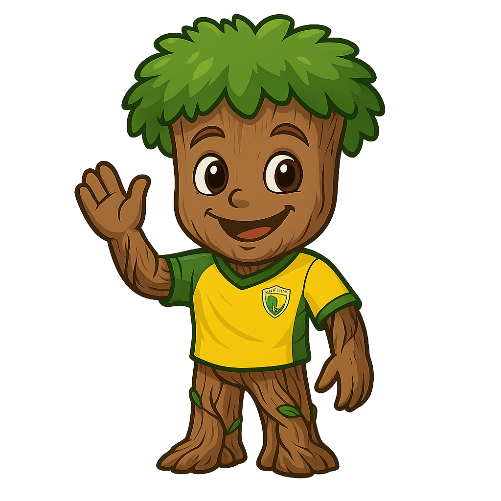

Historia, identidad y pasión por el fútbol
20/02/2008
Celebramos 18 años de historia, esfuerzo y pasión. 18 años formando personas, soñando en grande y defendiendo nuestros colores con orgullo.
💚 “Un club, una familia, un sueño” ⚽Nace el Club Los Robles con el sueño de formar futbolistas y construir una identidad deportiva sólida.
Participación en ligas regionales, marcando el inicio competitivo del club.
Expansión del plantel, fortalecimiento del cuerpo técnico y estructura deportiva.
Consolidación del club como institución formativa, competitiva y con identidad propia.
Club Los Robles celebra 18 años de historia, compitiendo en torneos oficiales y fortaleciendo todas sus categorías.
Años de Historia
Jugadores Formados
Entrenadores y Staff
Torneos Disputados
CAMPEONES

La mascota representa la fuerza, resistencia y orgullo del Club Los Robles. Simboliza nuestras raíces, la unión del equipo y el espíritu de lucha en cada partido.
Formar personas íntegras y futbolistas competitivos, promoviendo valores, disciplina y trabajo en equipo, representando con orgullo a Club Los Robles en cada competencia.
Ser un club referente en el desarrollo deportivo del Chocó y Colombia, reconocido por su formación integral, talento joven y compromiso social.